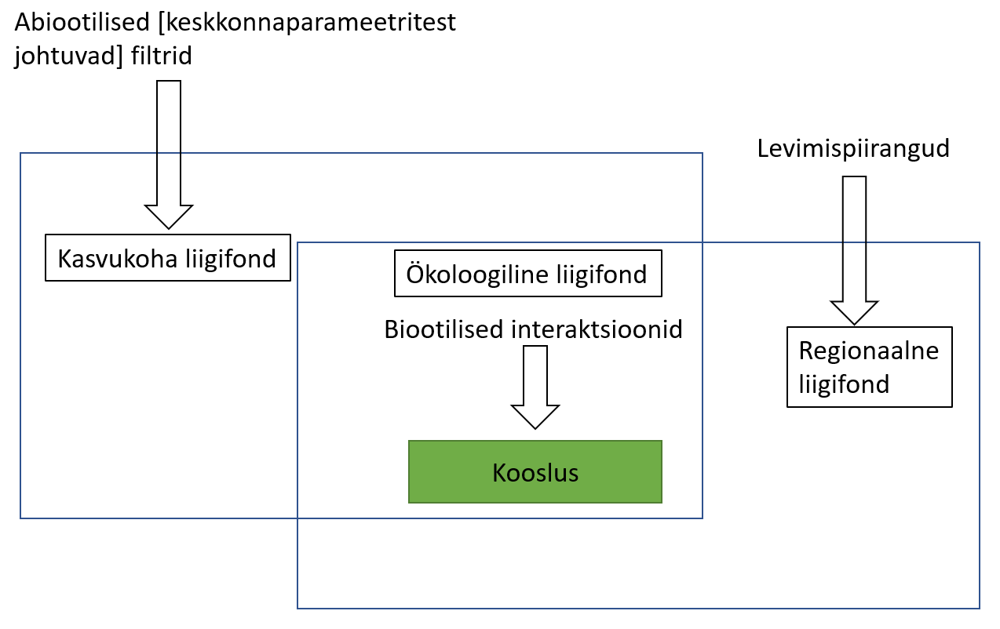

# Võrdsete ohtrustega kooslus 1
ohtrused_1 <- c(10, 10, 10, 10) # 5 võrdse ohtrusega liiki
prop_1 <- ohtrused_1 / sum(ohtrused_1) # liikide suhtelised ohtrused
# Shannoni mitmekesisus
H1 <- sum(prop_1 * log(prop_1))
# Shannon diversity (q = 1)
# H <- -sum(props * log(props))
# effective_shannon <- exp(H)
# Simpson diversity (q = 2)
# D <- 1 / sum(props^2)
# effective_shannon # Should return 5
# D # Should also return 5Koosluste ja ökosüsteemide struktuur
1 Sissejuhatus
Ökoloogia üks põhiküsimusi on mõista, mis reeglite järgi komplekteeruvad või tekivad kooslused ja ökosüsteemid. Kooslus on kogum liikide populatsioone, kes ajas ja ruumis kooseksisteerivad ning üksteist mõjutavad, olles samal ajal mõjutatud ka keskkonnaparameetritest. Seega uurib koosluseökoloogia seda, kuidas need liikide kogumid looduses jaotuvad, mis neid ja nende koosseisu mõjutab (keskkond, omavahelised interaktsioonid).
Kooslusi võib defineerida erinevatel ruumi- ja organisatsioonilistel skaaladel, olenevalt uurimisküsimuse ulatusest. Näiteks võib kooslus olla parasvöötmeline niidukooslus, mille hulka kuulub liblikõieliste taimede ja nendega seotud mikroorganismide kooslus, mille hulka kuulub lämmastikku fikseerivate bakterite kooslus. Nende üksteise sees pesastunud (nested) tasemete uurimine võimaldab meil mõista ökoloogilisi protsesse erinevatel skaaladel.
2 Koosluste koosseisu mõjutavad protsessid

Koosluse kooseisu kujundavad mitmed protsessid:
Levimispiirangud: Liigid ei pruugi kooslusest puududa mitte seetõttu, et tingimused ei ole sobivad, vaid kuna nad ei ole kooslusesse jõudnud.
Abioitilised filtrid: Keskkonnaparameetrid (nt mullatüüp, niiskus, valgusrežiim) piiravad liikide hulka, kes antud kasvukohas füsioloogilises mõttes hakkama saavad (fundamentaalne nišš).
Biootilised interaktsioonid: Konkurents, mutualism, röövlus - piiravad (või soodustavad!) keskkonnaparameetritega sobivate liikide koosluses püsimist.
+ Liigiteke ja väljasuremine: Mõjutavad regionaalse liigifondi kujunemist evolutsioonilises ajaskaalas. Selleks, et liik saaks kuskil liigifondis olla, peab ta põhimõtteliselt olemas olema.
Need ökoloogilised ja evolutsioonilised protsessid tingivad mustreid (liigirikkuse gradiendid, suktsessioon, liigirikkuse-produktiivsuse korrelatsioon jne).
3 Koosluse koosseisu kirjeldamine
Koosluse koosseise võib kirjeldada ja võrrelda erineva detailsusastmega:
Liigirikkus
Liikide suhteliste ohtruste jaotus
Mitmekesisus
Liikide vaheldumine
Liikide suhteliste ohtruste vaheldumine
3.1 Liigirikkus, mitmekesisus
Liigirikkus (S) on kõige lihtsamini mõistetav koosluse kirjeldamise parameeter - koosluses esinevate liikide arv. Aga eks tal ole ka puudujääke, kas või liigi defineerimine - mis on liik? Samuti ei kirjelda liigirikkus kuidagimoodi seda, kuidas isendite arvukus koosluses jaotunud on.
Mitmekesisuse mõõdikud arvestavad lisaks liikide arvule ka liikide (suhtelisi) ohtrusi ja mõnel juhul ka liikide tunnuseid või fülogeneetilisi suhteid (funktsionaalne või fülogeneetiline mitmekesisus). Mitmekesisuse indeksid võimaldavad lisaks liikide arvule hinnata, kui ühtlaselt on eri liikide isendid koosluses jaotunud.
Kõige tavalisemad mitmekesisuse mõõdikud on
Shannoni indeks (H’; Shannon index, Shannon’s diversity index, Shannon-Wiener index) - on tundlik nii liigirikkuse kui liikide ohtruse ühtluse suhtes.
Formaalselt väljendab Shannoni indeks määramatust juhuslikult valitud indiviidi liigilise kuuluvuse ennustamisel ja on defineeritud sedasi:
\[ H' = -\sum_{i=1}^{S} p_i \ln(p_i) \]
Kus:
- H’ on Shannoni indeks,
- S on liigirikkus,
- pi on liigi i suhteline ohtrus koosluses,
- ln on naturaallogaritm.
Gini-Simpsoni indeks (D; Gini-Simpson index) - annab suurema kaalu tavalisematele liikidele ning peegeldab eelkõige dominantsete liikide ohtrust.
Formaalselt väljendab Gini-Simpsoni indeks tõenäosust, et kaks juhuslikult kooslusest valitud indiviidi on samast liigist
3.2 Koosluse kirjeldamise täielikkus
Praktilises mõttes on liigirikkuse (ja sellest johtuvalt tegelikult ka mitmekesisuse) kirjeldamise puudujäägiks ka proovivõtu täielikkus (sampling completeness). Tavaliselt loendatakse ökoloogiliste uurimistööde käigus aja ja raha piiratuse tõttu liike teatud kindla pingutusega (olgu see pingutus kas taimede loendamiseks kulunud aeg, DNA sekveneerimissügavus ehk ühest proovist järjestatud DNA-lõikude arv, filtrist läbi lastud jõevee maht vms). Olenevalt liikide ühtlusest võime teatud ühtlase proovivõtupingutuse tulemusena saada ühest punktist parema kirjelduse kui teisest.

3.3 Shannon Diversity Index
The effective number of species based on the Shannon index is:
\[ ^1D = e^{H'} \]
3.4 Simpson Diversity Index
The Simpson diversity index reflects the probability that two individuals randomly selected from a sample will belong to the same species. It is calculated as:
\[ D = \sum_{i=1}^{S} p_i^2 \]
Where:
- ( D ) is the Simpson index (dominance index),
- ( p_i ) is the relative abundance of species ( i ).
A more intuitive measure is the inverse Simpson index, representing the effective number of dominant species:
\[ ^2D = \frac{1}{\sum_{i=1}^{S} p_i^2} \]
3.5 Ordination Techniques
 Figure 4. NMDS ordination of microbial communities showing clustering by environment.
Figure 4. NMDS ordination of microbial communities showing clustering by environment.
Ordination methods such as NMDS reduce complex data into low-dimensional space for ecological interpretation.
3.6 Energetic and Trophic Structure
 Figure 5. Classic trophic pyramid illustrating biomass and energy flow through trophic levels.
Figure 5. Classic trophic pyramid illustrating biomass and energy flow through trophic levels.
Ecosystem function can be understood through patterns of production and biomass across trophic levels.
4 Top-Down vs Bottom-Up Control
 Figure 6. Conceptual comparison of top-down and bottom-up regulation in a food web.
Figure 6. Conceptual comparison of top-down and bottom-up regulation in a food web.
These controls shape species interactions and abundance, with implications for biomass distribution.
5 Network Properties and Stability
 Figure 7. Nested vs modular structure in ecological networks (Bascompte & Jordano, 2007).
Figure 7. Nested vs modular structure in ecological networks (Bascompte & Jordano, 2007).
Modular and nested interactions contribute to stability, particularly under perturbation.
All figures used here are sourced from publicly available academic or educational resources for illustrative purposes.